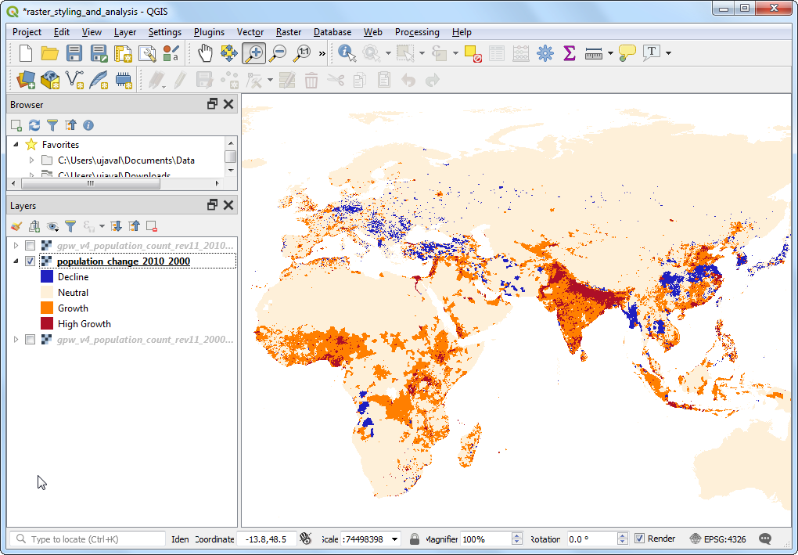

Ujaval Gandhi
Ujaval Gandhi空間連接 (QGIS3)¶
Spatial Join is a classic GIS problem - transferring attributes from one layer to another based on their spatial relationship. In QGIS, this functionality is available through the Join attributes by location Processing algorithm.
內容說明¶
We will use 2 layers - A shapefile of Borough boundaries of New York city and another shapefile of Street Pavement Rating for all streets in New York city. The first task will be to find the average rating of streets in each of the borough using a spatial join with summary algorithm. The second task will be to add the name of the borough to the street features through a one-to-many spatial join.
你還會學到這些¶
Creating filters to temporarily exclude certain features from computation.
取得資料¶
NYC Open Data Portal 是紐約市不錯的免費資料來源。
你可以使用介面上的 Export 鈕下載 Borough Boundaries 的 zip 檔。

Download the Street Pavement Rating zip file using the Export option on the portal.

為了方便起見，你也可以直接用下面的連結下載：
資料來源 [CITYOFNY]
操作流程¶
Locate the
nybb_19a.zipfile in the QGIS Browser and expand it. Select thenybb_19a/nybb.shplayer and drag it to the canvas. This is a polygon layer representing the borough boundaries in New York city.

Next, locate the
V_SSS_SEGMENTRATING_1.zipfile and expand it. Select thedot_V_SSS_SEGMENTRATING_1_20190129.shplayer and add it to the canvas. This is a line layer of all streets in the city.

Let's examine the attributes available for each feature of the
dot_V_SSS_SEGMENTRATING_1_20190129layer. Right-click and select Open Attribute Table.

You will notice the attribute called
Rating_Bwhich has values in the range 0-10 representing the street segment's rating. The attributeRatingWordhas descriptive rating. We can use theRating_Bfield to calculate the average rating.

You may have notice some features have a rating of
NR. These are the segments that were not rated. Including them in our analysis will not be correct. Before we do the spatial join, let's set up a Filter to exclude these records. Right-click thedot_V_SSS_SEGMENTRATING_1_20190129layer and select Filter.

In the Query Builder, type the following expression to select all records that are not rated
NR. You can also build the expression interactively by clicking on Field, Operator and selecting the appropriate Value. Click OK.
"RatingWord" != 'NR'
You will notice the
dot_V_SSS_SEGMENTRATING_1_20190129layer now has a filter icon indicating that there is an active filter applied to this layer. Now we can do a spatial join using this layer. Go to .

Search and locate the algorithm. Double-click to launch it.

In the Join attribute by location (summary) dialog, select
nybbas the Input layer. The street layerdot_V_SSS_SEGMENTRATING_1_20190129will be the Join layer. You can leave the Geometry predicate to the defaultIntersects. Click the ... button next to Fields to sumarize.

備註
A tip to help you select the correct input and join layers: The input layer is the one that will be modified will new attributes in the spatial join. As we want the average rating field to be added to the borough layer, it will be the input layer.
Select
Rating_Band click OK.

Similarly, click the ... button next to Summaries to calculate.

Select
meanas the summary operator and click OK. Now we are ready to start the processing. Click Run.

The processing algorithm will work through the features and apply the spatial join. Verify that the processing job was successful and click Close.

Back in the main QGIS window, you will see a new
Joined layerlayer added to canvas. Open the attribute table for this layer. You will see a new columnRating_B_meanis added to the input borough layer with the average rating of all streets that are interesecting with that feature.

Now we can perform a reverse operation. Sometimes your analysis requires getting attributes from another layer based on the spatial relationship but not compute any summary. We can use the
Join attribute by locationalgorithm for such analysis. The task is to add the name of the borough to each feature in the streets layer based on which borough polygon it intersects with. Before we run this algorithm, let's remove the filter from thedot_V_SSS_SEGMENTRATING_1_20190129layer. Click the filter icon and press the Clear in the Query Builder. Click OK.

Turn of the
Joined layerin the Layers panel. Find the algorithm in the Processing Toolbox and double-click it to launch.

Select
dot_V_SSS_SEGMENTRATING_1_20190129as the Input layer andnybbas the Join layer. You can leave the Geometry predicate to the defaultIntersects. Click the ... button next to Fields to add and selectBoroName. Click OK.

The line segment may cross a borough boundary, so we choose the Join type as
Crate separate feature for each located feature (one-to-many). Click Run.

Once the processing finishes, open the attribute table of the newly added
Joined layer. You will see that there is a newBoroNameattribute added to each street feature.

If you want to give feedback or share your experience with this tutorial, please comment below. (requires GitHub account)